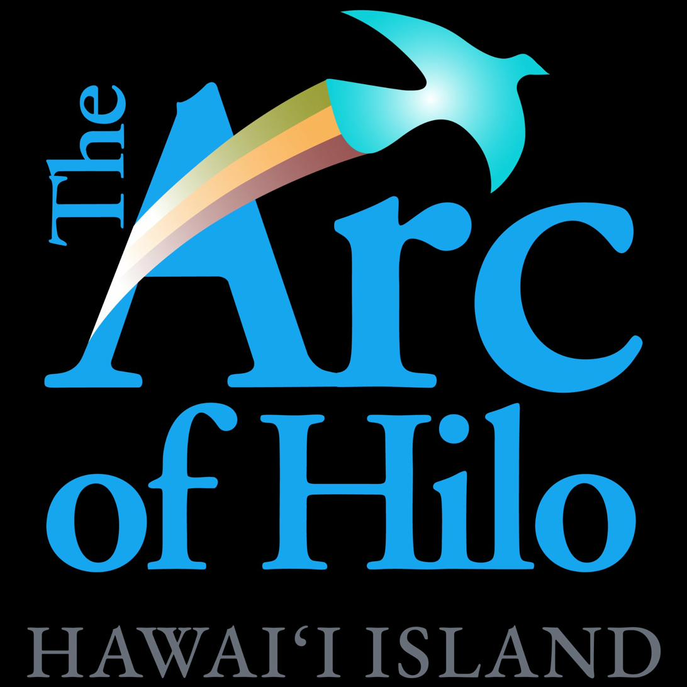
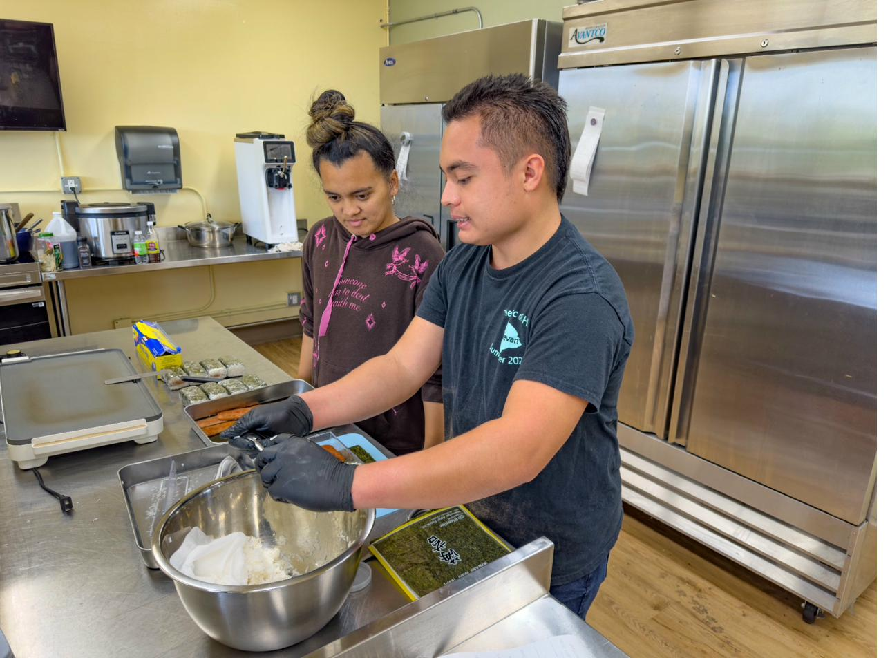

For more than 70 years, The Arc of Hilo has protected the rights and advanced the potential of people with intellectual and developmental disabilities on Hawaiʻi Island. In 2023 we opened Tiki Turtle Cafe, a working cafe and training kitchen where adults with disabilities learn real culinary skills alongside a professional chef. We did not wait for a grant to prove the model works. We built it one shift at a time, and every result below was earned by someone who had been told a kitchen job was not for them.
Tiki Turtle Cafe is transforming its prep kitchen into Hawaiʻi Islandʻs first certified teaching kitchen for adults with disabilities. Full commercial certification is the gateway that unlocks everything next: a culinary-training partnership with Hawaiʻi Community College so our participants earn credentials that count, dedicated teaching stations where they learn side by side, and the ability to open our kitchen to the wider Hilo food community.
We invite the Emeril Lagasse Foundation to fund the certified baking station: a commercial oven and the certification of the station around it, the first fully certified station in the teaching kitchen. It is where Genesis, a young woman born with a cleft palate and autism, is learning to bake. Once seen as shy, she is in fact a quick learner and a faster problem solver. She already goes home and cooks full meals for her family, and she dreams of starting her own food business. Your grant puts a professional oven under her hands and a credential within her reach. It is a discrete, completable piece of a larger vision, and it turns a passion into a livelihood: life skills through food, and culinary skills that lead to real work.
Adults with disabilities face an unemployment rate above 70 percent, and on a rural island the options are thinner still. Tiki Turtle Cafe changes that, and the results are real: participants who arrived unsure of themselves now run our front of house and cook for their own families at home. But our kitchen is not yet certified, and certification is the wall between where we are and everything we intend to build. Hawaiʻiʻs construction costs run roughly 50 percent above mainland averages once ocean freight is counted, which makes that wall higher for us than for almost anyone. A grant toward certification removes the single barrier between our team and credentials that follow them into any kitchen in the country.
Experience is valuable, but a credential travels. We are building a partnership with the culinary program at Hawaiʻi Community College so the skills our participants earn lead to certifications any employer recognizes. We know why this bridge matters: Jace began in the college's culinary program, but its pace did not fit the way he learns. He came home to Tiki Turtle, started in the back of the house, and today runs our front of house. Together, our kitchen and the college can do what neither does alone, pairing real instruction with the pace and support our team needs to reach the credential. A certified kitchen is the prerequisite that makes that instruction possible in our space.
We respectfully invite the Emeril Lagasse Foundation to fund the certified baking station at $25,000: a commercial baking oven and the certification of the station built around it. This is one nameable, completable piece of a $200,000 Phase One certification effort, itself the first step in a $750,000 vision for a full teaching and community kitchen.
We would be honored to name the station in recognition of the Foundation, and to welcome you to see it in use. A grant at whatever level fits your program would help certify the first station where our team earns real credentials. The Arc of Hilo is a 501(c)(3) nonprofit; gifts are tax-deductible.
We would be grateful for the chance to build this with you.